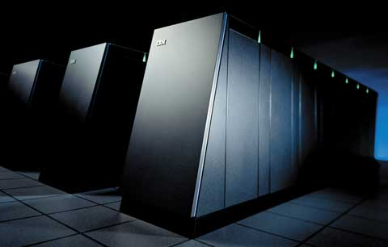
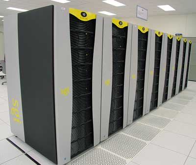
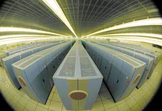
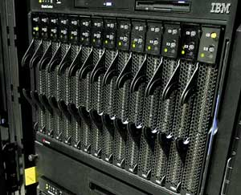
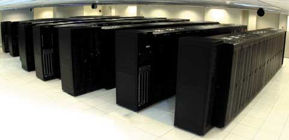

Олег Спиряев
Как известно, суперкомпьютеры применяются для решения таких сложных вычислительных задач, как прогнозирование последствий глобального потепления, предсказание траекторий движения ураганов и составление других метеопрогнозов, проверка работоспособности ядерного оружия в процессе его старения, биохимические исследования человеческого организма, взлом шифров. В течение двух с лишним лет самым быстродействующим суперкомпьютером в мире считалась японская система NEC Earth Simulator.
Прошлогодние рейтинги суперкомпьютеров не принесли особых сенсаций. Если говорить о тенденциях, то прежде всего, наверное, следует отметить стремительное распространение кластеров (что заметно даже по верхним позициям рейтинга) - в последних списках TOP500 (версии 23 и 24) на них впервые приходится свыше половины всех решений. Более того, эксперты высказывают мнение, что именно кластеры стали причиной общего удешевления суперкомпьютерного оборудования. Так, согласно прогнозам аналитической компании IDC (http://www.idc.com), в течение ближайших лет темпы роста объема рынка суперкомпьютеров в денежном выражении будут заметно отставать от темпов увеличения объема поставок. Предполагается, что в период с 2004 по 2008 г. совокупный доход производителей вырастет с 6,1 до 7,6 млрд долл. (т. е. на 24,6%), а объем поставок - со 112 до 176 тыс. систем (57,1%).
Информация, обнародованная на конференции по суперкомпьютерам SC2004 в Питтсбурге (http://www.sc-conference.org/sc2004), также позволяет говорить о растущей популярности вычислительных кластеров, в которых чаще всего применяются ОС Linux и процессоры Intel или AMD. Сегодня Linux-кластеры предлагают не только такие гранды, как IBM, HP, Dell и Sun Microsystems, но и ряд более мелких компаний. Кроме того, на конференции HP (http://www.hp.com), крупнейший поставщик машин для рынка высокопроизводительных вычислений, представила новые кластерные опции, включая серверы на базе процессоров Intel Itanium. Эти серверы составляют основу нового комплекта Unified Cluster Portfolio, куда входит также ПО для управления кластером HP XC System Software, ПО управления хранением данных HP Scalable File Share и услуги по установке и конфигурированию кластеров. НР работает также над кластерной графической системой, которая сможет быстро воспроизводить изображения размером до 100 млн пикселов. Сейчас HP Scalable Visualization System проходит испытания, выпуск ее планируется в конце июня текущего года. По опубликованным данным, за последний год доходы НР от кластерного бизнеса выросли на 50%.
Что такое TOP500Проект TOP500 (http://www.top500.org) был запущен в 1993 г., чтобы обеспечить надежную основу для отслеживания и определения тенденций в области высокопроизводительных вычислений. Список, в который входят 500 самых мощных в мире вычислительных систем, обновляется и публикуется дважды в год. Последние редакции списка составляли Ханс Мейер (Hans Meuer) из Мангеймского университета, Эрик Стромайер (Erich Strohmaier) и Хорст Саймон (Horst Simon) из Национального вычислительного центра энергетических исследований (NERSC) Министерства энергетики США/Национальной лаборатории им. Лоуренса в Беркли, Джек Донгарра (Jack Dongarra) из Университета штата Теннесси.
|
Эксперты обращают внимание и на то, что доля суперкомпьютеров, собранных в Азии, продолжает увеличиваться. Так, в 24-ю версию списка вошли 30 японских систем и 57 систем из других азиатских стран, в том числе 17 китайских, однако Европа и США пока еще остаются далеко впереди. Лидерство по числу решений, входящих в TOP500, держат корпорации IBM (http://www.ibm.com) и HP. Остальные компании - SGI, Sun Microsystems, Cray и Dell - заметно от них отстают.
Самые мощные компьютеры используют тысячи процессоров, потребляют мегаватты энергии и занимают целые этажи зданий. Но они все реже строятся на основе экзотической или специализированной технологии. Если рассматривать TOP500 с точки зрения применяемых процессоров, то безусловное первенство принадлежит Intel (с процессорами Itanium или Xeon), далее идут IBM с семейством POWER, HP c PA-RISC и AMD (http://www.amd.com). Этот факт наглядно демонстрирует тенденцию к тому, что стандартные компоненты Intel все шире используются для создания высокопроизводительных вычислительных решений при работе с наиболее требовательными к ресурсам приложениями. Так, в конце 2004 г. из 500 попавших в список суперкомпьютеров 320 были построены на процессорах Intel, тогда как шесть месяцев назад таких суперкомпьютеров было 287, а в 2003 г. - 189. В 89 случаях из 320 используются процессоры Itanium 2. Таким образом, доля платформ на базе архитектуры Intel в списке TOP500 в настоящее время составляет около 64% при том, что в 2001 г. в этом списке присутствовало всего 19 таких систем (т. е. за три года их число в TOP500 выросло в 15 раз).
По мнению руководства Intel, этот факт свидетельствует о том, что сообщество разработчиков высокопроизводительных вычислений отдает предпочтение стандартным компонентам, видя в этом большие преимущества. Intel действительно предлагает производительность уровня суперкомпьютеров, и при этом стоимость систем и время их ввода в эксплуатацию значительно сокращается. В результате мир уходит от использования экспериментальных систем на основе компонентов собственной разработки, которые стоят целое состояние и на создание которых уходят годы. Число систем на базе архитектуры Itanium в списке самых мощных в мире компьютеров TOP500 сейчас превышает общее число систем на базе RISC-архитектуры, включая POWER, SPARC, Alpha и MIPS.
Успех Blue Gene/L
Итак, NEC Earth Simulator, долгое время занимавший первую строчку списка самых быстрых суперкомпьютеров в мире, наконец, уступил это место. Новым лидером в гонке HPC (High Performance Computing) официально, согласно 24-й редакции списка TOP500, стал суперкомпьютер IBM Blue Gene/L. Впрочем, его успех был вполне ожидаем и отражает взятый в последние годы IBM курс на перенос своего опыта с деловых компьютеров на высокопроизводительные машины для технических вычислений. В последнюю редакцию списка TOP500 вошло 216 систем IBM, на долю которых приходится 49,4% общей производительности всех машин из этого списка. Восхождение подчеркивает также подъем ОС Linux, с которой работает Blue Gene/L и которая помогла IBM победить. Суперкомпьютер Blue Gene/L выполнил 70,7 трлн операций в секунду (TFLOPS), что почти вдвое превышает прежний рекорд Earth Simulator в 35,9 TFLOPS.
|  |
| Суперкомпьютер Blue Gene/L.
|
Несколько лет назад компьютер "терамасштаба" - способный выполнять свыше триллиона операций в секунду - считался знаменательным достижением. А в 1993 г. совокупная производительность всех 500 машин из списка составляла всего 1,12 TFLOPS. Теперь же порог в 1 TFLOPS преодолели 398 систем, а общая производительность 500 машин достигла 1,13 PFLOPS (петафлопс), или квадрильон вычислений в секунду. Самая слабая машина в списке показала производительность в 0,851 TFLOPS.
Суперкомпьютеры и национальная безопасностьПравительство США обеспокоено положением дел с суперкомпьютерами. Хотя IBM и Silicon Graphics восстановили лидерство в перечне 500 самых быстродействующих машин, но, несмотря на это, Национальный научно-исследовательский совет выпустил отчет, содержащий заключение экспертов о том, что конструкции высокопроизводительного вычислительного кластера, лежащей в основе 296 из 500 суперкомпьютеров, недостаточно для обеспечения национальной безопасности. Буквально через неделю после этого Конгресс США одобрил законопроект, называемый "Актом о возрождении высокопроизводительных вычислений Министерством энергетики" (Department of Energy High-End Computing Revitalization Act of 2004), и выделил в новый фонд суперкомпьютерной техники 165 млн долл. На эти деньги Министерство энергетики будет проводить исследования в области высокопроизводительных вычислений; разрабатывать и закупать суперкомпьютеры; организует центр разработки и поддержки ПО; а также будет передавать технологии частному сектору. Согласно законопроекту, Министерство энергетики должно будет исследовать различные аппаратные архитектуры, такие, как "реконфигурируемая логика, процессор внутри памяти, векторная, потоковая и многопоточная архитектуры", а также заниматься программными разработками в области "алгоритмов, среды программирования, инструментов, языков и операционных систем для высокопроизводительных вычислительных систем".
|
Blue Gene/L - суперкомпьютерный проект IBM, направленный на создание нового семейства суперкомпьютеров, оптимизированных по пропускной способности, масштабируемости и возможности обрабатывать большие объемы данных и в то же время позволяющих на порядок уменьшить энергопотребление и занимаемую площадь по сравнению с самыми мощными на сегодняшний день системами. Прототип машины Blue Gene/L по физическим размерам примерно в 20 раз меньше существующих систем сопоставимой мощности, например, кластеров Linux. Для сравнения - сегодняшний двухтерафлопный компьютер занимает целую комнату и часто состоит из более чем десятка промышленных стоек. Многократно сократив энергопотребление, стоимость и занимаемую площадь, ученые IBM превращают суперкомпьютеры с массовым параллелизмом в доступные по цене, практичные и удобные инструменты для науки и промышленности. Архитектура Blue Gene/L легко адаптируется для различных приложений и более доступна по сравнению с современными суперкомпьютерами за счет меньших физических размеров и эффективного использования питания.
Среди первых задач, для решения которых IBM собирается применить мощь вычислений с массовым параллелизмом Blue Gene/L, - исследование процесса сворачивания белка человека. Знание этого процесса поможет врачам лучше понять причины возникновения болезней и найти средства их излечения.
Ученые в Ливерморской национальной лаборатории имени Лоуренса (Lawrence Livermore National Laboratory, LLNL, http://www.llnl.gov) планируют использовать Blue Gene/L для моделирования физических явлений, где требуется вычислительная мощность, намного превышающая возможности современных компьютеров. В частности, они рассчитывают найти Blue Gene/L применение в исследованиях в области космологии, поведения двойных звезд, взаимодействия лазера с плазмой и процесса старения ядерного оружия. Напомним, что в BlueGene/L использовано 16 384 двухъядерных процессора PowerPC 440, работающих на частоте 700 МГц, его максимальная (не пиковая) производительность по тесту Linpack равна 70,72 TFLOPS.
Blue Gene/L - часть программы Advanced Simulation and Computing (ASC), проводимой организацией National Nuclear Security Administration (NNSA).
Спустя всего несколько дней после установления нового рекорда производительности среди суперкомпьютеров и публикации 24-й версии суперкомпьютерного рейтинга TOP500 представители корпорации IBM сообщили о начале поставок коммерческих версий сверхмощных серверов Blue Gene/L, предназначенных для решения задач делового характера и проведения научных исследований. Новая вычислительная система будет поставляться в конфигурациях, содержащих от одной до 64 стоек. Возможен также заказ частично заполненных стоек, включающих в себя менее 1024 узлов. Появление системы Blue Gene/L стало логическим завершением пятилетнего проекта, в котором только на проведение научно-исследовательских работ было потрачено 100 млн долл. Кроме того, IBM работает и над другими конструкциями, называемыми Blue Gene/C и Blue Gene/P, причем последняя нацелена на достижение производительности в 1 PFLOPS.
По сообщениям Министерства энергетики США, удвоившись в размерах, IBM Blue Gene/L удвоил и свой собственный рекорд производительности - в марте 2005 г. эта машина стала выполнять 135,5 трлн операций в секунду. Скачок производительности - результат доведения числа стоек в системе до 32. Окончательная конфигурация машины, монтаж которой планируется завершить в этом году, будет содержать 64 стойки с общей производительностью 270 TFLOPS.
Проект Columbia
Летом прошлого года корпорация SGI (http://www.sgi.com) сообщила, что NASA планирует объединить двадцать 512-процессорных систем SGI Altix 3000 на процессорах Intel Itanium 2. В результате система Space Exploration Simulator, содержащая 10 240 процессоров, должна была стать одним из крупнейших и самых мощных в мире суперкомпьютеров с ОС Linux.
Новый суперкомпьютер создавался в рамках программы сотрудничества NASA с SGI и Intel под названием "Проект Columbia", которая нацелена на достижение прорывов в области исследований космоса, глобального потепления климата и аэрокосмической техники. Основная цель проекта Columbia - расширение возможностей суперкомпьютерных систем NASA посредством развертывания интегрированной среды вычислений, визуализации и хранения данных, оптимизированной для задач NASA. По мнению руководства триумвирата, исследование космоса остается одной из величайших задач человечества, а новый суперкомпьютер позволит конструкторам и ученым заглянуть еще глубже и пойти еще дальше в изучении и освоении космического пространства.
Суперкомпьютер размещен в исследовательском центре Ames Research Center (http://www.nasa.gov/centers/ames/home/index.html) в Кремниевой долине. Официальные представители NASA сказали, что новая машина увеличит вычислительную емкость суперкомпьютеров агентства в десять раз. Каждая 512-процессорная подсистема в ней исполняет собственную копию Linux и соединяется с другими через коммутатор InfiniBand. За три года NASA израсходует на компьютерное оборудование для проекта около 45 млн долл.
|  |
| SGI Altix 3000 - основа суперкомпьютера Columbia.
|
Семейство SGI Altix 3000 отличается возможностью масштабирования от четырех до сотен процессоров Intel Itanium 2. Система способна конфигурироваться с несколькими терабайтами памяти, при этом каждый модуль памяти может быть распределен в рамках процессорного узла, максимизируя эффективное использование всей доступной памяти на протяжении всего времени.
Каждый узел, содержащий до 64 процессоров Itanium 2 и 512 Гбайт памяти, работает под управлением единого образа ОС Linux. Встроенные скоростные кластерные межсоединения позволяют увеличить скорость передачи данных до 200 раз по сравнению с обычными кластерными методами. В результате узких мест при передаче данных не существует, потому что процессоры не выполняют пустые циклы, ожидая получения данных из памяти. Это позволяет эффективно масштабировать SGI Altix 3000 до сотен, а в перспективе - до нескольких тысяч процессоров.
Как отмечают разработчики, SGI Altix 3000 - первый в мире кластер, использующий глобальную общую память, распределенную между узлами и операционными системами. Обычно суперкомпьютеры требуют больших объемов общей памяти для обсчета сложных моделей, таких, как глобальное предсказание погоды или моделирование в аэродинамической трубе при проектировании самолетов, где невозможна разбивка данных на части. Сочетание глобальной общей памяти и ОС Linux создает новые возможности для пользователей системы SGI Altix 3000, построенной подобно кластеру, но работающей как суперкомпьютер.
Результаты испытаний показывают, что SGI Altix 3000 занимает лидирующее положение по показателям производительности и соотношению цена/производительность, превосходя традиционные кластеры, высокопроизводительные серверы и векторные суперкомпьютеры. Основой для подобных результатов служит сбалансированная архитектура, обеспеченная особой системой межсоединений SGI NUMAlink. Как и в семействе SGI Origin 3000, в новом семействе серверов SGI Altix 3000 система NUMAlink обеспечивает обмен информацией между узлами кластера на два порядка быстрее стандартных кластерных межсоединений. Данные перемещаются по шине SGI NUMAlink из одного конца в другой и обратно меньше чем за 50 нс, обеспечивая сбалансированную производительность приложений в суперкомпьютерных вычислениях. Латентность ультраскоростной шины NUMAlink и высокая пропускная способность обеспечивают эффективность использования общей памяти.
Семейство серверов и суперкластеров SGI Altix 3000 доступно как в виде настольной системы начального уровня, так и в виде масштабируемого суперкластера. Сервер начального уровня включает четыре процессора и до 32 Гбайт оперативной памяти (с возможностью масштабирования до 12 процессоров и 96 Гбайт памяти). Суперкластер масштабируется до сотен процессоров и до 1 Tбайт памяти (с перспективой масштабирования до 2048 процессоров и до 16 Tбайт общей памяти).
Опыт инженеров SGI позволяет точно оценить потребности, цели и эксплуатационную среду клиентов компании с тем, чтобы создать Linux-решение, максимизирующее производительность коммерческих и внутренних приложений. SGI Altix 3000 на машинном уровне совместима с 64-разрядной версией Linux. Пользователи, располагающие кодами, которые уже работают на 64-разрядной версии Linux, смогут сразу воспользоваться преимуществами нового решения. Кроме того, SGI Altix 3000 предлагает эффективный набор инструментов для управления данными, контроля производительности, распределения нагрузки и управления ресурсами, с которыми легко отладить код так, чтобы использовать производительность кластера на полную мощность.
В конце октября проект был успешно завершен, и SGI объявила о достижении максимального быстродействия в 42,7 TFLOPS. Это сразу ставило машину во главу списка самых мощных в мире компьютеров, поскольку у тогдашнего лидера NEC Earth Simulator максимальная производительность составляла лишь 35,8 TFLOPS. Однако у нового суперкомпьютера оставался еще резерв по мощности. Дело в том, что для достижения быстродействия в 42,7 TFLOPS использовались только 16 из 20 серверов Columbia. Это означало, что 2048 из 10 240 процессоров Itanium 2, применяемых в суперкомпьютере, не были задействованы, - а это Itanium 2 нового поколения (Madison), каждый из которых оснащен 9-Мбайт высокоскоростной кэш-памятью. В итоге в официальных тестах суперкомпьютер Columbia показал производительность 51,87 TFLOPS, заняв почетное второе место.
Пожалуй, самое поразительное в истории проекта Columbia - это то, что команда специалистов Intel, NASA и SGI потратила на изготовление, интеграцию и ввод суперкомпьютера в эксплуатацию всего пять месяцев. В результате ученые и инженеры NASA получили систему, позволившую значительно увеличить возможности численного моделирования. Сегодня Columbia играет ключевую роль в программе возобновления полетов космических "челноков", а также активно используется в аэронавтике, в исследованиях космоса и Земли.
Earth Simulator
Тройку лидеров 24-й редакции списка TOP500 замыкает японский "Имитатор Земли", запущенный корпорацией NEC. Напомним, что Earth Simulator прочно удерживал верхнюю позицию рейтинга на протяжении примерно трех лет. Cуперкомпьютер, созданный при непосредственном участии специалистов корпорации NEC (http://www.nec.com), впервые стал наиболее производительной в мире системой еще летом 2002 г. (в 19-й редакции TOP500). Собственно, о завершении работ над высокопроизводительной векторно-параллельной системой Earth Simulator и ее передачей в "Центр моделирования Земли" (ESC, Earth Simulator Center) было объявлено еще весной того же года. Система разрабатывалась в течение пяти лет Научно-исследовательским центром моделирования Земли (ESRDC, Earth Simulator Research and Development Center) в сотрудничестве с Национальным агентством по исследованию космоса Японии (NASDA), Японским институтом исследования атомной энергии (JAERI) и Японским морским научно-техническим центром (JAMSTEC). Затраты на проект составили 40 млрд иен, в работах было задействовано свыше тысячи специалистов компании NEC.
Система Earth Simulator размещена в здании, похожем на авиационный ангар, с площадью пола 50х65 кв. м. Здание принадлежит Институту наук о земле в Иокогаме (Yokohama Institute for Earth Sciences). Этот суперкомпьютер состоит из 640 узлов производительностью 64 GFLOPS/узел и общим числом процессоров, равным 5120, для соединения которых потребовалось 2800 км кабеля. Каждый узел состоит из восьми векторных процессоров производительностью 8 GFLOPS/процессор и пиковой производительностью в 40 TFLOPS. Высокоскоростная сеть соединяет процессоры со скоростью передачи данных в 12,3 Гбайт/с. Для охлаждения системы через рабочие помещения в течение 10 с прокачивается 35 млн кубических футов воздуха.
|  | Суперкомпьютер Earth Simulator.
|
Все 640 узлов Earth Simulator основаны на архитектуре NEC SX. Каждый процессорный узел PN (Processor Node) состоит из восьми арифметических процессоров векторного типа AP (Arithmetic Processor), 16 Гбайт основной памяти MS (Memory System), удаленного устройства управления RCU (Remote Control Unit) и процессора ввода-вывода I/O. Пиковая производительность каждого AP составляет 8 GFLOPS. В состав Earth Simulator входит 5120 арифметических процессоров. Теоретическая производительность системы может достигать 40 TFLOPS. Время цикла составляет 2 нс.
Модуль векторного процессора имеет размеры 115 на 139 мм. Однокристальные процессоры системы созданы по 0,15-мкм технологии с восемью слоями медной металлизации и содержат приблизительно 60 млн транзисторов; число выводов составляет 5185. Тактовая частота процессора достигает 1 ГГц, потребляемая мощность - 140 Вт.
Подсистема MDPS (Mass Data Processing System) включает четыре файловых сервисных процессора, 250 Тбайт дисковой и 1,5 Пбайт ленточной памяти. Последняя выполнена на базе библиотеки StorageTek 9310. Объем оперативной памяти для всей системы составляет 10 Тбайт, а общий объем дисковой памяти, включающий рабочее дисковое пространство (около 460 Тбайт), превышает 700 Тбайт. В качестве ОС используется SUPER-UX. ПО и среда разработки основаны на Unix и созданы специально для суперкомпьютеров NEC SX-серий. Используются языки программирования Fortran90, HPF, C и C++. Трансляторы этих языков могут выполнять автоматическое распараллеливание и векторизацию. Кроме того, имеются библиотека передачи сообщений MPI2 и математическая библиотека ASL/ES.
Новый метод оценки суперкомпьютеровСейчас для ранжирования систем в списке TOP500 используется математический тест Linpack, в создании которого принял непосредственное участие Джек Донгарра, профессор Университета штата Теннесси. Сейчас он работает над новым комплектом тестов, так как, по его мнению, невозможно отразить общую производительность машины при помощи единственного показателя. Идея, на первый взгляд, довольно прозрачна: вместо измерения быстродействия на операциях с плавающей точкой проводить комплексную оценку производительности в различных тестах. Однако очевидно, что одним компаниям это будет выгодно, другим - нет. К тому же применение Linpack имеет свои несомненные достоинства. Так, по мнению Донгарры, новый комплекс из семи тестов не сможет заменить Linpack в качестве меры для TOP500. Во-первых, этот тест, которому уже десять лет, позволяет проводить исторические сравнения в сфере высокопроизводительных вычислений, а во-вторых, система, не способная получить высокой оценки по Linpack, не сможет хорошо работать в других тестах. Как известно, Linpack определяет, как быстро система выполняет сложные алгебраические вычисления, - этот тест хорошо измеряет производительность процессора, но не других компонентов суперкомпьютера. Например, он не может оценить, как быстро передаются данные в память или в дисковую подсистему. И хотя Linpack проверяет так называемые вычисления с плавающей точкой, он не исследует операции с целыми числами. А ведь целочисленные операции применяются при решении таких задач, как обработка генетических последовательностей. Комплекс HPC Challenge Benchmark (http://icl.cs.utk.edu/hpcc), напротив, содержит такие тесты, как Stream, который определяет, как быстро данные из памяти могут передаваться в процессор, или Ptrans, определяющий, как быстро один процессор суперкомпьютера взаимодействует с другим. В свою очередь, тест b_eff измеряет время реакции и пропускную способность сети, а вот DGEMM - это тест на перемножение числовых матриц. ПО исполняет все тесты одновременно, так что производители не смогут ограничиться каким-нибудь одним из них. Однако, так как все тесты измеряют разные характеристики системы, семь результатов не имеет смысла свертывать в одну составную оценку. В заключение стоит отметить, что программа создания новых тестов финансируется правительством США, точнее, агентством DARPA (Defense Advanced Research Projects Agency, http://www.darpa.mil).
|
MareNostrum из Барселоны
Четвертое место в 24-й редакции списка TOP500 занял самый мощный суперкомпьютер в Европе. Новая система под названием MareNostrum установлена в суперкомпьютерном центре Барселоны (http://www.bsc.org.es), который начал свою работу в январе 2005 г. Она собрана из высокомасштабируемых модульных серверов-лезвий IBM eServer BladeCenter JS20 на базе процессоров с архитектурой POWER и работает под управлением ОС Linux. Впервые в истории блейд-серверные технологии были применены для создания системы, вошедшей в пятерку самых мощных суперкомпьютеров мира. Добавим еще, что MareNostrum, в отличие от большинства других суперкомпьютеров, не требует дополнительных систем охлаждения.
|  | IBM eServer BladeCenter JS20 - базовый блок суперкомпьютера MareNostrum.
|
Как известно, IBM анонсировала eServer BladeCenter JS20 - первую в отрасли блейд-систему на основе архитектуры POWER - только в апреле 2004 г. По мнению экспертов, JS20 помогает трансформировать экономические показатели компьютеров, предлагая недорогое мощное решение с использованием процессора PowerPC 970, построенного на основе той же архитектуры, которая сейчас применяется в системах IBM eServer pSeries и iSeries, поддерживающих приложения Unix, Linux и OS/400.
Суперкомпьютер MareNostrum послужит для научного сообщества Испании средством реализации проектов, которые до настоящего времени могли проводиться только в международных центрах. Теперь ученые смогут планировать и осуществлять гораздо более масштабные проекты, что существенно стимулирует научную деятельность в стране. Суперкомпьютер может применяться в различных областях, однако наиболее мощное влияние он окажет на биологические науки и здравоохранение. Ниже перечислены некоторые из потенциальных областей применения суперкомпьютера MareNostrum.
Изучение человеческого организма: суперкомпьютер может использоваться для расшифровки генетического кода, исследования процессов сворачивания белков и для изучения других сложных проблем, например, связанных с такими заболеваниями, как синдром Альцгеймера или кистозный фиброз. В перспективе это приведет к значительному усовершенствованию методов лечения и развитию медицинских знаний. Как ожидается, исследования позволят значительно продвинуться по пути к персонализированным лекарствам, адаптированным к генетическим особенностям и состоянию здоровья конкретного пациента.
Метеорология: исследования атмосферных явлений и климатических изменений требуют сложных вычислений с использованием огромного количества переменных. Суперкомпьютерные системы уже применяются для повышения точности моделирования и предсказания климатических процессов, включая усовершенствованное прогнозирование погоды.
Стихийные бедствия: одно из применений суперкомпьютеров состоит в прогнозировании возможных последствий природных катаклизмов (наводнений, лесных пожаров, землетрясений и т. д.). Эта технология способна даже облегчить принятие решений в реальном времени, предсказывая, например, куда может распространиться начинающийся лесной пожар.
Окружающая среда: суперкомпьютеры позволяют улучшить изучение биологической вариативности и баланса экосистем. Кроме того, они позволяют формировать гидрологические прогнозы. Наконец, суперкомпьютер может применяться для моделирования экологических и социальных последствий сельскохозяйственных, индустриальных и градостроительных проектов.
Индустриальные и управленческие процессы: суперкомпьютер можно использовать для выполнения промышленных и бизнес-приложений в различных отраслях, например, в аэрокосмической, автомобильной или фармацевтической.
К настоящему времени IBM уже установила 3564 процессора PowerPC из 4564, которые вычислительная система должна иметь в полной конфигурации. Однако даже в такой конфигурации система MareNostrum уже достигла установившейся производительности 20,53 TFLOPS (триллионов операций с плавающей точкой в секунду) и пиковой производительности 31,363 TFLOPS в тесте Linpack, что превышает максимальные показатели производительности, продемонстрированные другими суперкомпьютерами Европы. После окончательного завершения проекта суперкомпьютер MareNostrum будет представлять собой кластер из 2282 серверов eServer BladeCenter JS20 и, как ожидается, достигнет пиковой производительности 40 TFLOPS.
Суперкомпьютер MareNostrum занимает около 160 кв. м - это меньше, чем половина баскетбольной площадки. Он имеет массу в 40 тонн и потребляет сравнительно немного электроэнергии. Система MareNostrum временно была собрана в Мадриде менее чем за два месяца. В настоящее время она находится на своем постоянном месте в Политехническом университете в Барселоне.
Российский рейтинг суперкомпьютеровМежведомственный суперкомпьютерный центр РАН и Научно-исследовательский вычислительный центр МГУ им. М. В. Ломоносова объявили о выпуске первой редакции списка 50 самых мощных суперкомпьютеров России и СНГ ТOP50 (http://www.supercomputers.ru). Проект создания такого рейтинга стартовал в мае 2004 г. В этот список входят 50 наиболее мощных вычислительных систем, установленных на территории стран СНГ. Системы ранжируются по показателям реальной производительности, полученным в тестах Linpack, который используется и в международном рейтинге ТOP500. Российский рейтинг, как и международный, обновляется дважды в год. Возглавляют первый список TOP50 две системы, вошедшие в последнюю редакцию мирового рейтинга TOP500. На первом месте с производительностью 2,032 TFLOPS находится компьютер "СКИФ К-1000", созданный в рамках российско-белорусской программы СКИФ и установленный в Минске. Кластер создан на базе 576 процессоров AMD Opteron с тактовой частотой 2,2 ГГц и высокоскоростного интерфейса InfiniBand. Второе место в списке TOP50 с показателем 1,401 TFLOPS занимает другой кластер - МВС-5000М Межведомственного суперкомпьютерного центра Российской академии наук, построенный на основе 336 процессоров PowerPC 970 (частота 1,6 ГГц) и сети Myrinet. На третьем месте оказался суперкомпьютер МВС-1000М, установленный также в МСЦ РАН. Он был построен еще в 2001 г. и в течение двух лет не покидал списка TOP500. Его производительность в тесте Linpack составляет 734,6 GFLOPS. На четвертом месте находится кластер Научно-исследовательского вычислительного центра МГУ им. М.В. Ломоносова с производительностью 512 GFLOPS. Эта система содержит 160 процессоров AMD Opteron с частотой 2,2 ГГц и использует для соединения узлов InfiniBand. Пятое место занял кластер, установленный в Институте проблем информатики и автоматизации Национальной академии наук Армении. Он использует 128 процессоров Intel Xeon с частотой 3 ГГц и имеет производительность в 483,6 GFLOPS. Что касается архитектуры представленных суперкомпьютеров, то в списке безусловно лидируют кластеры, намного опередившие классические параллельные системы с общей памятью. Большая часть систем построена на основе высокоскоростных коммуникационных технологий: InfiniBand, Myrinet и SCI. Более половины попавших в рейтинг суперкомпьютеров установлены в Москве.
|
"Гром" на базе Itanium 2
Суперкомпьютер Thunder, построенный для Ливерморской национальной лаборатории имени Лоуренса (LLNL) компанией California Digital Corporation (http://www.californiadigital.com) и занимавший в 23-м рейтинге TOP500 второе место, в конце прошлого года сместился на пятую позицию. Создавали Thunder три компании - Intel, California Digital (суперкластер собран ею из 1024 своих серверов California Digital 6440) и Quadrics, разработчик технологии быстрых межсоединений QsNet(II). Говорили, что звучное название Thunder ("Гром") выбрано как своеобразный ответ Intel на другой суперкластер-рекордсмен - Lightning ("Молния"). Последний, как известно, был собран из процессоров AMD Opteron в Лос-Аламосской национальной лаборатории и буквально ворвался в первую десятку самых быстрых компьютеров мира.
|  |
| Суперкомпьютер Thunder.
|
Большую роль в создании Thunder сыграла, разумеется, корпорация Intel. Еще участвуя в конференции Supercomputing 2003, она представила новую программу Advanced Computing Program (АСР), предусматривающую выделение 36 млн долл. и дополнительные технические ресурсы на стимулирование научно-конструкторских работ и инвестиций в высокопроизводительные решения и системы будущего. Инициатива должна была реализоваться в рамках стратегии компании по созданию суперкомпьютеров на базе стандартных серийных компонентов. Основная задача программы состояла в том, чтобы дать организациям, традиционно использующим суперкомпьютеры, возможность быстро развертывать масштабируемые, высокопроизводительные вычислительные системы, отличающиеся простотой использования и эксплуатации. Разработанные в рамках ACP технологии планировалось реализовать в отрасли с использованием серийных конструктивных блоков, таких, как процессоры Intel Xeon, Intel Itanium 2 и Intel Pentium 4, в сочетании с рекомендациями ACP. По мнению руководства корпорации, программа Advanced Computing Program - это ответ на потребность в более сбалансированных высокопроизводительных вычислительных системах с широкими возможностями и более удобными средами программирования для пользователей. В Intel было также сформировано новое подразделение, Parallel & Distributed Solutions Division, которое должно было заниматься разработкой и маркетингом ПО для пользователей высокопроизводительных вычислений HPC. В задачи подразделения вошло создание ПО для Grid-сетей и систем параллельной обработки, а также поддержка центров Intel по высокопроизводительным вычислениям. Одним из примеров практической реализации программы стал суперкомпьютер Thunder.
Кластер Thunder состоит из 960 узлов на базе процессора Intel Itanium 2 с тактовой частотой 1,4 ГГц и 4 Мбайт кэш-памяти третьего уровня (L3). На каждом узле установлено по 8 Гбайт оперативной памяти и жесткий диск UltraSCSI 320 емкостью 73 Гбайт. Системы оборудованы гигабитными сетевыми контроллерами Intel, обеспечивающими управление кластером, и двухпортовыми серверными сетевыми адаптерами Intel PRO/1000 MT, позволяющими избежать узких мест и повысить надежность кластера. Системные платы узлов созданы на базе наборов микросхем Intel E8870, оптимизированных для работы с процессорами Intel Itanium 2, и обеспечивают высокую производительность и масштабируемость, а также обладают расширенными возможностями обнаружения, исправления и предотвращения ошибок. Общий объем дискового пространства кластера превышает 190 Тбайт.
На момент создания Thunder по производительности превосходил любой Linux-кластер, имеющийся в Северной Америке. Более того, данный суперкомпьютер претендовал на второе место в списке пятисот мощнейших суперкомпьютеров мира. По производительности, выраженной в триллионах операций с плавающей точкой в секунду он уступал лишь лидеру рейтинга - японскому Earth Simulator. Заявленная создателями Thunder производительность составляла 19,94 TFLOPS; она была документально подтверждена при составлении двух последующих рейтингов (23-я и 24-я редакции TOP500).
Суперкомпьютер Thunder стал производственным ресурсом мирового класса и обеспечил работу ученых, которые заняты в исследованиях лаборатории LLNL, связанных с национальной безопасностью, включая материаловедение, строительную механику, электромагнетизм, исследования атмосферы и океана, сейсмологию, биологию, а также работы в области магнитного и инерциального термоядерного синтеза. Кроме того, данный суперкомпьютер планируется использовать для решения самых разных несекретных научных и инженерных задач в рамках программы Multiprogrammatic & Institutional Computing (M&IC).